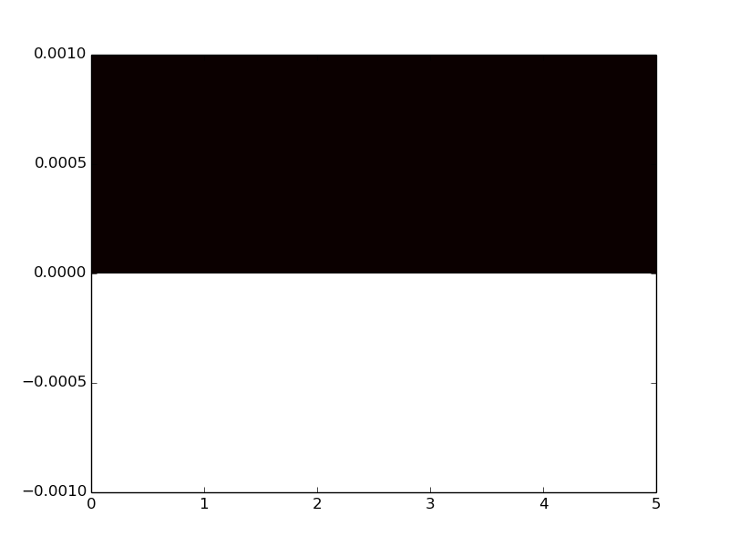
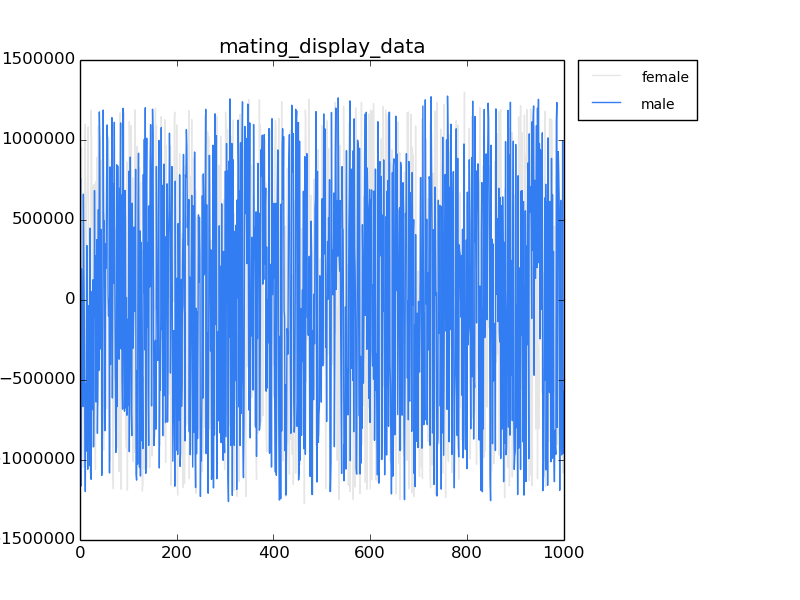

Ok, per last update (sigh), I need to finish the modifications to the source code to only shove offspring into the right place (BIRTH_METHOD 14).
avida-core/source/main/cPopulation.cc:5158 - Added handling of BIRTH_METHOD 14 (reproduce into zone) avida-core/source/main/cPopulation.cc:5520 - Added FindRandEmptyCellInRange avida-core/source/main/cPopulation.h:465 - Added FindRandEmptyCellInRange declaration
Ok, that's done, committed, and pushed. Testing seems to show that it is indeed segregating based on the zones...
Erm, but I'm not sure this is what I should have done...
The segregation is just to make sure that things are born into the same zone as their parent... How the hell is mating discrimination based on lineage label actually useful? I need to make sure I can do mate discrimination based on lineage label does NOT interfere with the other kinds of mate discrimination... So, div mate discriminate needs to interact with other kinds of mate discrimination. I'm still going to need to fuck with the birth chamber. :/
Ok, so zoning is still valid. But, I need to be able to raise and lower it with an event, just like the lineage label. Or... do I? maybe not. Never mind. It can stay zoned. I'll get rid of it if it becomes a problem
Right, so I've added support inside of cBirthMatingTypeGlobalHandler.cc for grabbing the mate_id from the phenotype when they get placed in the birth chamber (cBirthEntry.cc and .h), and then checking against it if ALLOW_MATE_SELECTION is turned on in the config. Further, it'll only check the mate_ID if mate_ID > 0, which suits me. This mate_id only gets set when instructions "div-sex-MS" (for the nop label), or "div-sex-MSL" (using the lineage label) is executed.
So, what this means is that I now have the pieces to have sexual selection in an environment that is physically (and birth-chamberly) separated.
The final thing to add is some better selection capabilities (like fixing the adding in of DisplayMerit to cBirthMatingTypeGlobalHandler.cc).
To make this whole set of configurations work, you need the following ingredients:
Todo:
Gonna try doing some science. First, I'm going to set up some runs with the current implementation.
Discovered I had missed something important with the setting of the lineages (mate_id) when saving entries. Apparently, it sets all the objects through the accessors. :/
Anyway, fixed that, and decided to go ahead and add the targeted displayA/B stuff. So, we're looking for a particular value, and it gets set based on what's in your registers. It's a different instruction, and it's going to be in a different place than the one that sets it in the males, so I don't see it being a problem.
avida-core/include/public/avida/core/Definitions.h:202 - added MATE_PREFERENCE_TARGET_DISPLAY_A, MATE_PREFERENCE_TARGET_DISPLAY_B avida-core/source/cpu/cHardwareCPU.cc:441 - added instructions to set mate preference to target A or B; 10853 - added added methods to set mate preferences to target A or B avida-core/source/cpu/cHardwareCPU.h:1046 - new method definitions, as above. avida-core/source/main/cBirthChamber.cc:155 - fixed to store entry including mate_id avida-core/source/main/cBirthEntry.cc:45 - set m_mate_id to initialize at construction. avida-core/source/main/cBirthMatingTypeGlobalHandler.cc:228 - added code to compare closeness of TARGET displays; 375 - fixed adding checking for lineage matching when being choosy instead of only when not choosy. avida-core/source/main/cBirthMatingTypeGlobalHandler.h:42 - change to declaration to support comparing target display, per 228 above.
These are my changes. I think it should cover everything... Let's test it out.
The events file looks like this:
# Seed the population with a couple pairs of organism # in the zones defined by BIRTH_METHOD 14, and BIRTH_ZONES 2 u begin InjectRange default-heads-sex-male.org 0 899 u begin InjectRange default-heads-sex-female.org 900 1799 u begin InjectRange default-heads-sex-male.org 1800 2699 u begin InjectRange default-heads-sex-female.org 2700 3599 # establishing the labels that ALLOW_MATE_SELECT will act upon, supporting # BIRTH_METHOD 14 u 0 PrintLineageCounts u 0 SetLineageLabelRange 0 1799 5 # first half u 0 SetLineageLabelRange 1800 3599 7 # second half u 0:100:end PrintLineageCounts # Print all of the standard data files... u 0:100:end PrintAverageData # Save info about they average genotypes u 0:100:end PrintDominantData # Save info about most abundant genotypes u 0:100:end PrintCountData # Count organisms, genotypes, species, etc. u 0:100:end PrintTasksData # Save organisms counts for each task. u 0:100:end PrintTimeData # Track time conversion (generations, etc.) u 0:100:end PrintResourceData # Track resource abundance. u 0:100:end PrintMatingTypeHistogram u 0:100:end PrintFemaleMatePreferenceData u 0:100:end PrintBirthChamberMatingTypeHistogram u 0:100:end PrintMatingDisplayData u 0:100:end PrintInstructionData u 0:100:end PrintInstructionAbundanceHistogram u 100:100:end PrintBirthChamber u 100:100:end PrintSuccessfulMates # Setup the exit time and full population data collection. u 20000:20000:end SavePopulation save_historic=0 # Save current state of population. u 100000 Exit # exit
The instruction set file:
#DISPLAY+PREFERENCE (FEMALE COST=200, COST OF CHOICE=0) INSTSET heads_sex:hw_type=0 # No-ops INST nop-A # a INST nop-B # b INST nop-C # c # Flow control operations INST if-n-equ # d INST if-less # e INST if-label # f INST mov-head # g INST jmp-head # h INST get-head # i INST set-flow # j # Single Argument Math INST shift-r # k INST shift-l # l INST inc # m INST dec # n INST push # o INST pop # p INST swap-stk # q INST swap # r # Double Argument Math INST add # s INST sub # t INST nand # u # Biological Operations INST h-copy # v INST h-alloc # w # Mating Type Operations INST set-mating-type-male # x INST set-mating-type-female # y INST div-sex-mating-type:female_cost=200:choosy_female_cost=0:redundancy=0 # z # THIS STILL WORKS BECAUSE COST IS SET HERE INST if-mating-type-juvenile # A INST if-mating-type-male # B INST if-mating-type-female # C INST set-mate-preference-random # D INST set-mate-preference-highest-display-a#:redundancy=0 # E INST set-mate-preference-highest-display-b#:redundancy=0 # F INST set-mate-preference-highest-merit:redundancy=0 # G INST increment-mating-display-a#:redundancy=0 # H INST increment-mating-display-b#:redundancy=0 # I # I/O and Sensory INST IO # J INST h-search # K INST div-sex-MSL #L This is the one we're using INST set-mate-preference-target-display-a #M INST set-mate-preference-target-display-b:redundancy=0 #N INST set-mating-display-a #O INST set-mating-display-b:redundancy=0 #P
And the relevant configs in avida.cfg:
COPY_MUT_PROB 0.0025 # Substitution rate (per copy) BIRTH_METHOD 14 # Which organism should be replaced when a birth occurs? BIRTH_ZONES 2 # With BIRTH_METHOD 14, how many birth zones should the population be subdivided into? Default = 1 ALLOW_MATE_SELECTION 1 # Allow organisms to select mates (requires instruction set support) MATING_TYPES 1 # Turn on separate mating types (i.e., males/females; off by default; requires instruction set support) DISABLE_GENOTYPE_CLASSIFICATION 1 # Disable tracking of historical genotypes to conserve memory (off by default)
And finally, the organisms have:
set-mating-type-male or set-mating-type-female
and divide with
div-sex-MSL # ...divide (with sex... controlled by lineage)!
So, right now it's segfaulting at something at update 100. I'm almost certain that it's the output printing stuff.
Ok, I've fixed it. It was, indeed, a problem with the priting of the mating types.
I've submitted some runs to the HPCC (job 37522) just to explore the qualities of the system.
I need to add the following, so I can print out what the hell the population is doing.
Next, I also need to do the wall removal and see what happens. Also a shit ton of controls
Ok, my 104 job that I started thismorning just finished. I had messed up the instruction set such that lots of instructions weren't disabled, so I had some weird shit happening. Now, I'm going to do a regular flame graph and see what happens.
caninoko@dev-intel14:~/mate_discrimination/output/104_Testing_Functionality_FullTest/basic_104001/summary$ python ~/research_scripts/graph_generation/flamegraph/flamegraph.py flamegraph.png 14 5 ../data/detail-?0000.spop* ../data/detail-?00000.spop*

oookay. So, there's something very wrong here. I looked at the datafile, and it's just ... every single one has a phylogenetic depth of zero. Which is fuuucked up.
Let's have a look at mating displays, then. Or, at least one of them.
caninoko@dev-intel14:~/mate_discrimination/output/104_Testing_Functionality_FullTest/basic_104001/summary$ python ~/research_scripts/quickplot.py mating_display_data mating_display_data.dat.gz 3 ../data/ female mating_display_data.dat.gz 4 ../data/ male

Hmmn. That's ... fucked, and completely unreadable. I need a history, a snapshot of every mating display value, ideally identifiable by what cell it was in at the time.
Ok, what I was hoping to be able to extract was something that would show me that the character of these populations, such that I could tell when and if they were interbreeding. The flame graphs would ideally have told me all this. Fine, I'm going to re-run some of these using the same seeds, just to pull out enough data for some flame graphs.
Feeling slightly stuck. I spent a ton of time yesterday evening trying to track down why birth-chamber-originating organisms didn't have their phylogenetic depth set. Fucking bunny trail. So, I'll have to do it some other different way. Ultimately, I need to pull out the lineages. This may not be possible, since everything is interbreeding with everything else. So, what I want to figure out, is how to tell if the organisms are indeed interbreeding with each other. I need to know if there is gene flow!
Ok, so, if I'm going to pull out the lineage data, I need to have the parents be saved in the population dump. Not having it is unacceptable. So, I need to figure this out. First, I'm going to see if that setting in the config file does something horrible.
AHA! It was "DISABLE_GENOTYPE_CLASSIFICATION 1". And, it was non-obvious, because I had to follow the bunnytrail alluded to above, to find that parent and phylogenentic depth is being stored in genotype (not organism, or phenotype, or whatever). The genotype is only set if you do classification. Ergo, disabling genotype classification disables this step from ever taking place. BAM.
So, now the question then becomes whether this will blow up memory to the point where the runs crash. I suspect not, because I think there was a different bug that was causing the blowup, which had nothing to do with genotype classification. So, I'll set some runs going on the HPCC, and then we'll see. In the mean time, I need to create some scripts to pull out the information from the detail files. I want to do flame graphs, which is fine, but I really need to see if there is geneflow.
Separately, it occurs to me that setting the phylogenetic depth as being a single step from an arbitrary parent loses information. It should be the different of the offspring from each parent, somehow. :/ This might not end up being important, especially since I'm not really depending on phylo depth for anything important.